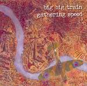

| Artist: | Big Big Train |
| Title: | Gathering Speed |
| Label: | Independent trcd002 |
| Length(s): | 56 minutes |
| Year(s) of release: | 2004 |
| Month of review: | [06/2004] |
| 1) | High Tide, Last Stand | 7.06 |
| 2) | Fighter Command | 10.44 |
| 3) | The Road Much Further On | 8.38 |
| 4) | Sky Flying On Fire | 6.04 |
| 5) | Pell Mell | 6.36 |
| 6) | Powder Monkey | 9.08 |
| 7) | Gathering Speed | 7.23 |
Sure, Big Big Train still is Big Big Train, but the style no longer is a folky progressive, it's far more a traditional symphonic style. The tracks are rather long and mellotron sounds are abundant, almost reminiscent of Genesis in the Nursery Crime era at times. The build up of tracks in general is good. The band's original laid backness still shows through, in the sense that the music is nowhere over the top. The melody has the room to develop, striking the balance between rushing to the point and stretching ideas past their limits.
Opener High Tide makes immediately clear what the band are about nowadays: strong vocals and a swooping melody strongly presented by guitar and synths. Fighter Command, despite its strict sound, has more laid back sections, referring to the band's past. These sections, however, are alternated with more symphonic parts, with mellotron playing an important part.
The vocals in Pell Mell are sung in a way that reminds me of the vocal lines in Mostly Autumn tracks, before they went rock on us. The vocals in closer and title track Gathering Speed are a bit too mellow for my tastes, and refer to earlier Big Big Train material.
Big Big Train have come up with an album filled with strong melodies, restraint and balance, and a beautiful atmosphere. No matter your opinion of previous Big Big Train albums, Gathering Speed writes itself in capitals.